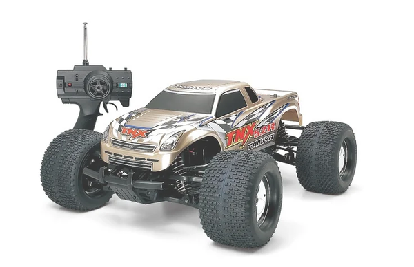

タミヤ TNX5.2R シャンパンゴールド・カスタム

引用元画像：タミヤ公式サイト
📋 基本情報
| メーカー | タミヤ（Tamiya） |
|---|---|
| 機種名 | TNX5.2R シャンパンゴールド・カスタム |
| 型番 | 49460 |
| 発売時期 | 2007年11月24日 |
| 生産状況 | 生産終了 |
| カテゴリー | ラジコンカー（1/8スケール エンジンRCカー） |
| サブカテゴリー | モンスタートラック（ニトロエンジン、限定カラーモデル） |
📏 シャーシスペック
| シャーシ | TGM-04 |
|---|---|
| 全長 | 560mm |
| 全幅 | 428mm |
| 全高 | 240mm |
| ホイールベース | 360mm |
| トレッド | 前後共335mm |
| タイヤ幅/径 | 前後共87/148mm |
| 車体重量 | 4,660g（燃料含まず） |
| フレーム | ジュラルミン製パワートレインデッキ＋樹脂製フレーム |
⚙️ 駆動系
| 駆動方式 | シャフトドライブ4WD |
|---|---|
| トランスミッション | 2スピード（フック式遠心クラッチ） |
| ギヤ比 | 1速 22.5:1 / 2速 15.5:1 |
| クラッチ | スリッパークラッチ標準装備 |
| ドライブシャフト | 強化スチール製ドライブシャフト |
| ベアリング | フルベアリング仕様（26個） |
| エンジン | FR-32FX（5.2cc） |
| 燃料タンク | 150cc |
🔧 サスペンション
| 形式 | ボールピボットタイプ4輪ダブルウィッシュボーン独立懸架 |
|---|---|
| ダンパー | 大容量オイルダンパー×4本 |
| 特徴 | 優れたオフロードハンドリングと安定性 |
💡 特徴
ゴージャスカラーのエンジン・モンスタートラック
- シャンパンゴールドボディ＋シルバーメッキホイールの豪華仕様
- ロワデッキもシルバー仕上げでカラーコーディネート
- 限定カラーモデルの特別感
TGM-04シャーシの高性能
- ジュラルミン製パワートレインデッキと樹脂製フレームで構成
- 車体中央のトランスミッションから前後輪にパワーを伝達
- 金属製ドライブシャフトによる確実なパワー伝達
- 26個のボールベアリングで駆動ロスを削減
強力なFR-32FXエンジン
- 排気量5.2ccの大排気量エンジン
- 圧倒的なパワーを発揮した豪快な走りが楽しめる
- リニアなトルク特性と高出力の両立
- スライドバルブキャブレター装備
充実の装備
- 2チャンネル送信機付属
- ハンディスターター＆プラグヒーター付属
- 工具類一式付属
- 新開発の高密度オーバルスパイクタイヤ装備
🔧 ぽすとそに工房での修理実績
修理難易度
★★★★★（非常に困難、パーツ供給がほぼないため、整備難易度は高いです。）
よくある故障・注意点
- エンジン関連部品の経年劣化（発売から15年以上経過）
- パーツ供給がほぼ無いため、修理には高度な技術が必要
- 燃料システムの劣化（タンク、チューブ類の交換が必須）
- トランスミッション内部の摩耗（特にクラッチ周り）
- シャンパンゴールドボディの塗装劣化
修理のポイント
- エンジンのオーバーホールには専門知識が必須
- パーツが入手困難なため、TNX 5.2R（43530）との共通パーツを探す
- 燃料系統は定期的な交換が推奨される
- ヤフオク等で中古パーツを探すことも選択肢
- 限定カラーモデルのため、ボディ破損時の代替が困難
その他の特徴
- TNX 5.2R（43530）の限定カラーバージョン
- 完全組立済み・エンジン調整済みのRTR（Ready-To-Run）仕様
- TGM-04シャーシはTNX（TGM-03）から大幅に改良されたモデル
- 荒れたオフロードをダイナミックに駆けるモンスタートラック